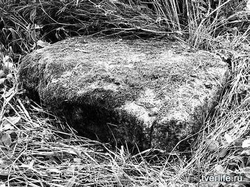

Белый
Природа
Бельский каменный алтарь
Подлинным достоянием и одним из чудес Бежецкого края является Верестово озеро – государственный памятник природы. Местные жители рассказали очень красивую легенду. Будто нет дна в этом озере. Само оно имеет волшебную силу жемчужины чёрной, если кто найдёт эту жемчужину, озеро станет темнеть, в земле чудотворные родники откроются. Район озера Верестово является уникальным природным комплексом, местом сезонной миграции большого количества различных видов водоплавающих птиц. Это и десятитысячные стаи белолобых и серых гусей, десятки тысяч речных и нырковых уток, которые весной начинают гнездиться на озере Верестово, многочисленные кулики. Здесь можно заметить очень редко встречающихся перелётных видов: тулес, круглоносый плавунчик и средний кроншнеп. Озеро Верестово можно назвать птичьим раем. Здесь прижились две колонии серых цапель, крупнейшая в Европе колония малой чайки, большие колонии турухтана, отмечено гнездование редкой в этих местах вертлявой камышовки. Встречается ряд видов птиц, занесённых в Красную Книгу России: чёрный аист, скопа, орлан-белохвост, филин. В 1980-х годах проводились исследования по экологии водоплавающих птиц. Угодье входит в состав ключевой орнитологической территории международного значения.
Большой, вросший в землю плоский камень серо-коричневого гранита, прямоугольной формы, явно обработанный рукой человека лежит у основания Соборной горы («Соборки») со стороны озера Весёлого (Банного), в полутора-двух метрах от глубокой воронки давно высохшего родника. Ближе к горе, в трёх-четырёх метрах от него, стоял ещё один, тоже вросший в землю камень конической формы, и вместе они образовывали створ, ворота с дорогой между ними. Второй камень, к сожалению, не сохранился до наших дней, хотя его помнят ещё в 80-е гг.Соборная гора в Белом была местом проведения древних общеплеменных событий, обрядов и ритуалов — собраний - «соборов», что и дало когда-то название таким священным горам и холмам, не даром в средние века на ней был сооружён Троицкий собор.
Как предполагает бельский краевед, кандидат искусствоведения В. Барыбин: «Наш камень мог быть алтарём индоевропейцев-литовцев – охотников Неманской культуры, не разрушенный пришедшими сюда в VI-VII веках земледельцами – славянами-кривичами».